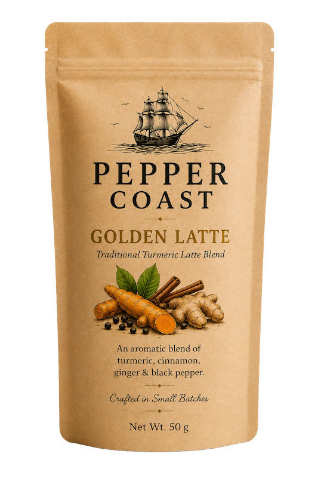

First Release
Golden Latte
Traditional Turmeric Latte Blend
An aromatic blend of turmeric, cinnamon, ginger and black pepper. Crafted in small batches from carefully selected ingredients sourced directly from Kerala's highlands.
€15.00
Order via Instagram
Ingredients
Turmeric, Cinnamon, Ginger, Black Pepper. No artificial ingredients, no fillers.
How to Enjoy
- Add 1 heaped teaspoon (5g) to 200ml of warm milk.
- Stir until smooth.
- Sweeten to taste if desired.
- Enjoy.
Origin & Sourcing
All ingredients are sourced directly from small farms in Kerala and neighbouring regions. Each batch is hand-blended and quality-checked before packing.